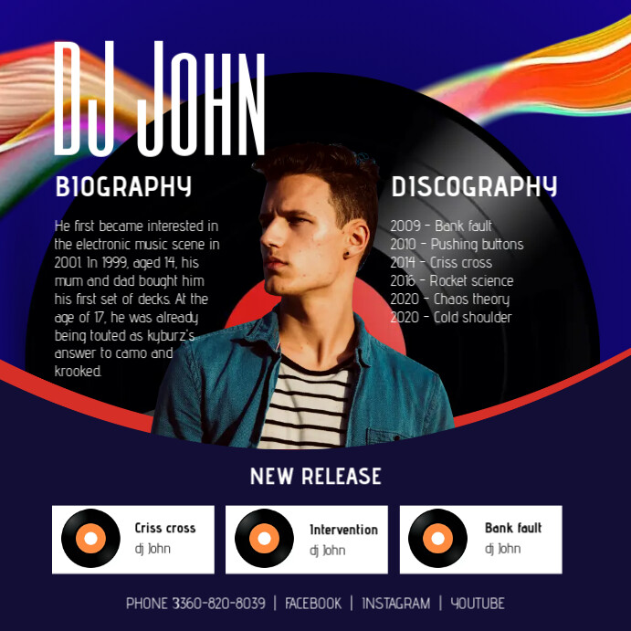

About Jacked Platypus
Jacked Platypus is a Charlotte-based DJ and event brand focused on bringing high-energy sets to UNC Charlotte and the surrounding area. The goal is simple: make every night feel like the main event.
From fraternity parties and bar nights to themed events and private functions, the brand focuses on crowd energy, clean transitions, and reading the room instead of just pressing play on a playlist.

What You Can Expect
- Customized playlists matching the vibe of your event
- Smooth transitions and live mixing
- Professional communication and planning
- Experience with college crowds and student events